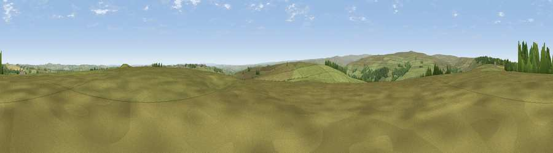

Viewpoint near Satley
#18410 in England · top 42% of its area beats it · near SatleyThe view, rendered

A 360° render of this exact spot computed from the terrain model, tree cover and land cover — summer colours, afternoon light, calibrated against photographs of famous viewpoints. Real trees, hedges and buildings will differ in detail.
The panorama
Grey silhouette: terrain skyline in each direction (720 bearings, Earth curvature and refraction included). Dashed green: skyline with trees (+15 m) and buildings (+8 m) as obstacles. Blue strip: how far the ground is visible on each bearing.
Where the view opens
Wedge length = distance to the farthest visible ground on that bearing (vegetation-aware). Rings at 10, 25 and 50 km.
What fills the view
87% grassland · 8% woodland · 4% cropland ·
Angular shares of the visible panorama (visual magnitude), not map area. Landscape diversity 0.22 (0–1 Shannon).
Key numbers
More beautiful places nearby
The staircase of upgrades: each row has a higher view potential than everything closer. Driving times are estimates from straight-line distance, calibrated against real road routing — check an actual route before setting out.
| Place | Direction | Drive | Score |
|---|---|---|---|
| Viewpoint near Wolsingham | SSW · 2 km | ~5 min | 63.0 |
| Fatherley Hill | WSW · 6 km | ~13 min | 66.7 |
| Collier Law | W · 7 km | ~14 min | 71.7 |
| Pontop Pike | NNE · 13 km | ~24 min | 77.8 |
| Little Dun Fell | WSW · 39 km | ~58 min | 78.4 |
| Cross Fell | W · 40 km | ~60 min | 78.7 |
| Viewpoint near Cumrew | W · 53 km | ~75 min | 78.8 |
| Viewpoint near Lazenby | ESE · 54 km | ~76 min | 82.1 |
54.77353, -1.87444 · source: screening · position refined by local search. Computed location — check access rights before visiting.